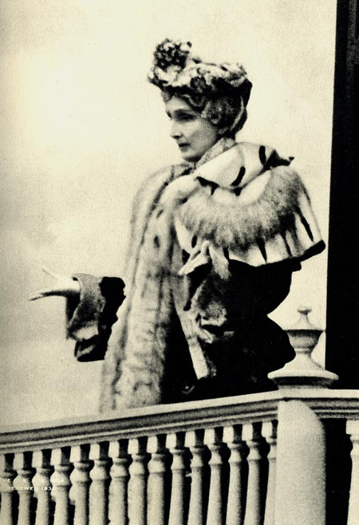
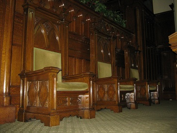

1889
Closes MA Metaphysical College and disorganizes church.
New Hampshire plays an important part in the history of Christian Science. Mary Baker Eddy, the founder of Christian Science, was born in Bow, NH and lived in several homes across the state throughout her life.

Beloved Brethern:-- I have the pleasure of thanking you for your kind invitation to attend the one hundred and seventy-fifth anniversary of our time-honored First Congregational Church in Concord, NH, where my parents first offered me to Christ in infant baptism. For nearly forty years and until I had a church of my own, I was a member of the Congregational Church in Tilton, NH.
Because of the magnitude of their spiritual import, we repeat the signs of these times. In 1905, the first Congregational Church, my first religious home in this capital city of Concord, NH, kindly invited me to its one hundred and seventy-fifth anniversary; the leading editors and newspapers of my native State congratulate me; their records of my ancestry attest honesty and valor. Divine Love, nearer my consciousness than before, saith: I am rewarding your waiting, and "thy people shall be my people."
The Longyear Museum has made several of Mary Baker Eddy's homes available for public tours. Mrs. Eddy lived on on North State Street from 1889-1892 (contact Holly Morris (603)225-3444 for more information about visiting this home). She revised Science and Health for the 50th edition publication and wrote her autobiography Retrospection and Introspection while living here!
Mrs. Eddy lived at her "Pleasant view" home from 1892-1908, at which time she reorganized the First Church of Christ, Scientist in Boston, MA. From this home, she guided worldwide activities and gained fame as a religious leader and writer. The building erected on this site in 1927 served as a home for retired Christian Science practitioners and nurses until 1975. On June 30, 1897, Mary Baker Eddy invited "one and all" to visit for the 5th of July. She again invited many to visit her at Pleasant View in 1903 and addressed them from the back balcony facing the hillside and the pond below the house.

On June 30, 1897, Mary Baker Eddy invited "one and all" to visit for the 5th of July:
My Beloved Church:-- I invite you, one and all, to Pleasant View, Concord, NH, on July 5, at 12:30 pm, if you would enjoy so long a trip for so small a purpose as simply seeing Mother.
With love, Mother, Mary Baker Eddy
I am especially desirous that it should be understoof that this was no festal occasion, no formal church ceremonial, but simply my acquienscence in the request of my church members that they might see the Leader of Christian Science.
Mrs. Eddy again invited many to visit her at Pleasant View in 1903 and addressed them from the back balcony facing the hillside fields and the pond below the house.
Beloved Brethern:-- Welcome home! To your home in my heart! Welcome to Pleasant View, but not to varying views. I would present a gift to you to-day, only that this gift is already yours... This gift is a passage of Scripture; it is my sacred motto, and it reads thus:--
"Trust in the Lord, and do good; so shalt thou dwell in the land, and verily thou shalt be fed. Delight thyself also in the Lord; and He shall give thee the desires of thine heart. Commit they way unto the Lord; trust also in Him; and He shall bring it to pass. And He shall bring forth they righteousness as the light, and thy judgement as the noonday."
Mrs. Eddy would frequently travel by horse-drawn carriage to town from Pleasant View. Mrs. Eddy loved the Concord community and did much for the city, including paving the streets and giving shoes to many children.


In 1889, when she first moved to Concord... the town boasted a few blocks of cobblestone in the business section as its only street paving. … the city paving in 1908 consisted of about fifty blocks of well-constructed tarred macadam and concrete pavements. Mrs. Eddy’s residence in Concord directly contributed to these improvements…
The main thoroughfares leading into the city were in such poor condition that in the spring of 1899, a farmer with a light load became stalled in the mire near the entrance to Pleasant View, and at times it was hardly safe for Mrs. Eddy to take her daily drive. … She started the fund for good roads by offering the Concord city government five thousand dollars, which she later increased to eight thousand, for the macadamizing of Pleasant Street.
By the summer of 1906, as a result of Mrs. Eddy’s initiative, additional improvements were made… Mrs. Eddy wrote a letter to the citizens of Concord, published in the papers of June 21, 1906:
Our picturesque city greatly needs improved streets. May I ask in behalf of the public this favor of our city government, namely: –to macadamize a portion of Warren street and …State street throughout?
Her appeal to the Concord citizens bore immediate fruit. An article in The Boston Herald of August 8, 1906 reported:
Through the suggestion of Mrs. Mary Baker Eddy…the capital city of the Granite state is to have, in the improvement of State street, one of the finest avenues in New Hampshire…
Allow me to say to the good folk of Concord that the growth and prosperity of our city cheer me.
Our picturesque city, however, greatly needs improved streets. May I ask in behalf of the public this favor of our city government: namely, to macadamize a portion of Warren Street and to macadamize North State Street throughout?
Her interest in the welfare of the children of Concord endeared her to many parents. Learning of the lack of adequate footwear among the school children of the poor, she arranged for each child, whose parents were unable to supply the need, to be provided with a pair of winter shoes. On the day of the State Fair (1902) known as Children’s Day, all the children were admitted free of charge and Mrs. Eddy’s representative presented coupons, redeemable at the store of the merchant, to those children (205) who, after investigation, had been selected to receive them. … So successful was the plan of distribution, and so great was the need, that she continued her gifts to the children of Concord for several years.
Beloved Brethren: — Allow me to send forth a paean of praise for the noble disposal of the legislative question as to the infringement of rights and privileges guaranteed to you by the laws of my native State. The constituted religious rights in New Hampshire will, I trust, never be marred by the illegitimate claims of envy, jealousy, or persecution.
In our country the day of heathenism, illiberal views, or of an uncultivated understanding has passed. Freedom to worship God according to the dictates of enlightened conscience, and practical religion in agreement with the demand of our common Christ, the Holy One of Israel, are forever the privileges of the people of my dear old New Hampshire.
Lovingly yours,
Mary Baker Eddy
Box G, Brookline, Massachusetts,
April 12, 1909
THE CONCORD YEARS
This is an annotated chronology of significant events in the life of Mary Baker Eddy during the years she lived in Concord, NH.
Closes MA Metaphysical College and disorganizes church.
Publishes Christian Science Quarterly— Bible Lessons.
Publishes landmark 50th edition of Science and Health.
A reordering of chapters, new chapter titles, and the addition of marginal headings makes this the first edition to contain many elements familiar to readers today.
Publishes Retrospection and Introspection.
Church of Christ (Scientist) reorganizes as The First Church of Christ, Scientist. Moves to “Pleasant View” home in Concord, NH, where she lives until 1908 (16 years) when she moves to Chestnut Hill.
Publishes Christ and Christmas.
Ordains Bible and Science and Health as pastor of The Mother Church.
Construction of The Mother Church completed
Ordains Bible and Science and Health as pastor in branch churches.
Publishes Pulpit and Press and Manual of The Mother Church.
Purchases the house on the corner of South State Street and School Street that she remodels for the first Christian Science services in Concord, NH – Christian Science Hall.
Publishes Miscellaneous Writings 1883-1896.
Holds last class, the Class of 70, in Concord, NH, at Christian Science Hall, and establishes Board of Education.
Establishes The Christian Science Publishing Society, Board of Lectureship, and Committee on Publication.
Publishes Christian Science versus Pantheism.
First issue of Christian Science Weekly (later Christian Science Sentinel) is published.
Publishes Message to The Mother Church for 1900.
Publishes Message to The Mother Church for 1901.
Donates half of her wealth, $100,000 for the building of a church edifice in Concord, NH
Adds “Fruitage” chapter to Science and Health.
226th edition included the introduction of line numbering
Publishes Message to The Mother Church for 1902.
Lays the cornerstone for The First Church of Christ, Scientist, Concord, NH
First Herald of Christian Science: Der Christian Science Herold is published.
Published monthly and/or quarterly in 13 languages
Publishes a concordance to Science and Health.
The First Church of Christ, Scientist, Concord, NH is dedicated.
Establishes Christian Science organizations for colleges and universities.
The Mother Church Extension completed.
“Next friends” suit brought against church officials. Suit is unsuccessful.
Moves to Chestnut Hill, MA.
Establishes The Christian Science Monitor.
Another historic moment Mary Baker Eddy and the Christian Science community contributed to in NH was the Treaty of Portsmouth, a peace treaty which ended the war between Russia and Japan. This documentary provides more information about the peace-related efforts of a number of faith communities and spiritual leaders such as the Episcopalians, Congregationalists, as well as those of the Jewish Community, Quakers, Sarah Farmer, founder of the Green Acre Baha'i School in Eliot, Main and Mary Baker Eddy and the Discoverer and Founder of Christian Science. The film highlights the role of the Christian Science church and of select Christian Scientists who worked on behalf of this peace treaty.
For more information about the documentary click here
The 1905 peace conference in Portsmouth, NH led to the end of the war between Russia and Japan. The treaty led to a Nobel Peace Prize for President Teddy Roosevelt.
The impact Mrs. Eddy had on the city of Concord is commemorated in several ways, including by having a painting of Mary Baker Eddy hanging in the State House in Concord.
Below are some of the other recognitions of Mary Baker Eddy as a Leader:
2006: The Atlantic. Mary Baker Eddy was included in the list of 100 Most Influential Americans, along with Abraham Lincoln, Thomas Jefferson, and Benjamin Franklin.
2002: Religion and Ethics News Weekly. Mary Baker Eddy was inlcuded in a list of the 25 Most Influential Religious figures in the 20th Century along with Pope John Paul II, Dalai Lama, Martin Luther King Jr., and Mother Theresa.
1995: Mary Baker Eddy was inducted into the National Women's Hall of Fame.
1994: National Women's Book Association. Science and Health was chosedn as one of 75 books written by American women whose words have changed the world.
1976: Life Magazine. Mary Baker Eddy was included in a special report of "Remarkable American Women from 1776-1976.
1959: McCalls Magazine. Mary Baker Eddy was included on a list of 34 most "eminent women" in history.
1933: Chicago Tribune. Mary Baker Eddy was chosen in a Nationwide poll of American Women as one of twelve leaders of their sex in the last 100 years.
1908: Académie Française. Mary Baker Eddy was officially presented with a Diiploma of Honor as an "Officier d’Académie” by the French government.
1903: National Magazine. Mary Baker Eddy was rated as "standing eighth in a list of twenty-two of the foremost living authors.
The First Church of Christian Science, Concord, NH was a gift from Mary Baker Eddy to the town Of Concord.
Before the church was built, the church community met in Concord at the Christian Science Hall. This was a colonial house remodeled for church services and stood on the corner where the present church edifice stands. The upper floor was converted into an auditorium that seated about two hundred people. Mary Baker Eddy taught her last class and delivered her last sermon in Christian Science Hall in 1898.
Following is the summary of the early history of First Church of Christ, Scientist in Concord NH, from The First Church of Christ, Scientist and MIscellany, and as told in the inspired biography, Twelve Years with Mary Baker Eddy, Amplified Edition, by Irving C. Tomlinson.
My Dear Editors: — You are by this time acquainted with the small item that in October, 1897, I proposed to one of Concord’s best builders the plan for Christian Science Hall in Concord, N.H.
…And now, at this distant day, I have provided for you a modest hall, in which to assemble as a sort of Christian Science kindergarten for teaching the “new tongue” of the gospel with “signs following,” of which St. Mark prophesies.
I have purchased a pleasant place for you, and prepared for your use work-rooms and a little hall, which are already dedicated to Christ’s service, since Christian Scientists never stop ceremoniously to dedicate halls.
“Mrs. Eddy often spoke of her experience in supervising the remodeling of the colonial mansion in Concord, which she gave to the Concord Scientists as their first church home. After discussing her plan for remodeling the house with one of Concord’s best builders, she engaged him to carry on the work. She wrote of this experience:
“He drew the plan, showed it to me, and I accepted it. From that time, October 29, 1897, until the remodelling of the house was finished, I inspected the work every day, suggested the details outside and inside from the foundations to the tower, and saw them carried out. One day the carpenters’ foreman said to me: “I want to be let off for a few days. I do not feel able to keep about. I am feeling an old ailment my mother had.” I healed him on the spot. He remained at work, and the next morning said to Mr. George H. Moore of Concord, ‘I am as well as I ever was.’”
“May this dear little church, nestled so near my heart and native hills, be steadfast in Christ, always abounding in love and good works, having unfaltering faith in the prophecies, promises, and proofs of Holy Writ.” (from the First Annual Meeting, January 11, 1900)
Christian Science Hall will ever occupy a sacred spot in the memory of Christian Scientists who value familiar landmarks in the history of the movement, for it was in this little sanctum that Mrs. Eddy taught her last class in 1898. And it was here, on occasions, that she met members of her Boston church. Over the entrance of the hall, Mrs. Eddy had directed that the following verse be inscribed, which she selected from an old hymn:
Daughter of Zion, awake from thy sadness,
Awake! for thy foes shall oppress thee no more!
Bright o’er the hills dawns the day‑star of gladness,
Arise! for the night of thy sorrow is o’er.
This quotation is form an old hymn, believed to be of American origin and was especially loved by Mrs. Eddy. The hymn was sent for use in the revised Christian Science Hymnal by a member of Mrs. Eddy’s household, the wording being slightly changed to suit the music which was written by E. N. Greenwood. This framed illuminated first two lines of verse originally hung in the Reading Room in Christian Science Hall at the request of Mrs. Eddy that “it be hung where all who enter may see and read.” Mrs. Eddy referred to her Church in her message to the Annual Meeting of The Mother Church in 1896 where she writes, “God hath indeed smiled on my church, this daughter of Zion.”
That she never lost her great gift of eloquence in after years I am able to testify, for it was my privilege on February 26, 1898, to hear Mrs. Eddy deliver a remarkably inspiring address in Christian Science Hall, Concord, New Hampshire. At her invitation, a party of First Members of The Mother Church, nearly forty of us in number, were present in the attractive audience room of Christian Science Hall. Every inch of standing room on this historic occasion was taken and many were turned away.
After the preliminary exercises were conducted by the First Reader, Mr. Ezra M. Buswell, C. S. D., Mrs. Eddy appeared. As she entered the hall the entire audience by common impulse arose and remained standing until she had taken her place. At that date Mrs. Eddy was in her seventy‑seventh year, yet except for her white hair there was no trace of age in her appearance, manner, gesture, or voice. The Concord Evening Monitor of February 27, 1898, in its account said, “Mrs. Eddy appeared at her best, as sprightly and energetic as a young woman.”
She took the ninety‑first Psalm as the subject of her address, reading the Scriptures without glasses. Speaking for three quarters of an hour, with neither manuscript nor notes, she appeared as free as though giving an address was to her an everyday occurrence. Her voice was resonant, beautifully modulated. She gave to every word its proper value and to every thought the right inflection. Her manner of presentation was so natural, so unaffected, that the attention of her auditors remained wholly on the message and not at all upon the messenger who gave it.
The words she chose were as simple and direct as was the manner of her delivery. Although she never hesitated to make use of an apt illustration or a pertinent story to point a moral or to enhance the effectiveness of her message, there was no flowery rhetoric.
It is regrettable that there is no adequate report of this inspiring discourse.
The cornerstone of the current church was laid in July 1903 and the church was dedicated in July 1904.
The organ was a gift by the members of 1st Church of Christ, Scientist, New York. The organ was originally built by Hutchings-Votey of Boston, in 1904. The organ rebuilder has been George Bozeman, Jr. whose company originated in Pembroke NH and has instruments all over America.
To The Mother Church
My Beloved Brethren: — Your munificent gift of ten thousand dollars, with which to furnish First Church of Christ, Scientist, of Concord, N.H., with an organ, is positive proof of your remembrance and love. Days of shade and shine may come and go, but we will live on and never drift apart. …
…When we are willing to help and to be helped, divine aid is near. If all our years were holidays, sport would be more irksome than work. So, my dear ones, let us together sing the old-new song of salvation, and let our measure of time and joy be spiritual, not material.
The organ has 32 ranks of pipes with 30 stops. The pipes are belgian zinc, polished and lacquered. The Chimes were added and the key action of the organ was converted from tubular pneumatic to electro-pneumatic action in 1937. The organ was entirely reconditioned in 1952 and has been further refurbished with new leathers. When this rebuilding was completed the organ was given the title “OPUS 70.” The new organ console, installed in 1998, is a Copeman Hart console and was built in England.
In her letter of gratitude to the members of the New York branch church, Mary Baker Eddy penned the often cited summary of her experience as a Christian Healer and the founder of a world-wide movement:
Thus may each member of this church rise above the oft-repeated inquiry, What am I? to the scientific response: I am able to impart truth, health, and happiness, and this is my rock of salvation and my reason for existing.
The church tower contains fifteen tubular chimes, which are played before all services, at Christmas time, New Years Eve, July 4th, lectures held in the church, and other special occasions. Long cords from the chimes extend down below the tower to the level just above the balcony. The tower is 165 feet high.

Link is to an excellent article on the Mary Baker Eddy Library website about the building of this church, titled Building “Mrs. Eddy’s Gift” to Concord, New Hampshire.
Photo courtesy of Longyear Museum, Chestnut Hill, MA
“Our proper reason for church edifices is, that in them Christians may worship God, – not that Christians may worship church edifices!” -Mary Baker Eddy at the Dedication of the church on Sunday July 17, 1904 First Church of Christ, Scientist and Miscellany p. 162
Mary Baker Eddy came often to see the progress of the building of the church, and was often consulted by the supervising architect.
The architects were Francis Richmond Allen and Charles Collens of Boston.
ALLEN, FRANCIS RICHMOND
A.I.A. He studied at the Massachusetts Institute of Technology, Ecole des Beaux Arts, Paris, and later received an LL.D. from Amherst and an honorary M.A. from Williams. His firm of Allen & Collens designed eight buildings at Williams College, twelve at Vassar, Union Theological Seminary’s group in New York, and that of Andover Theological Seminary in Cambridge, Massachusetts. He was a member of the American Institute of Architects, Boston Society of Colonial Wars, and Society of Mayflower Descendants. –from The Society of Architectural Historians
The contractor was E. Noyes Whitcomb of Boston, the father of Miss Ethel Whitcomb, former Second Reader of The Mother Church and later a member of the Board of Lectureship. E. Noyes Whitcomb was the contractor for the original Mother Church in 1894. He was also the contractor for the State House in Boston and the Gale Memorial Library in Laconia, among many other libraries and buildings in New England.
I[reprinted here from the 1904 Christian Science Sentinel, Vol. VIII, No. 4, p. 54. The original is from The Concord (N.H.) Daily Patriot by KG. Irving C. Tomlinson accompanied Mrs. Eddy during this visit and is said to be responsible for these details described.]
Mr. Editor:
“Yesterday, for the first time, the Rev. Mary Baker G. Eddy visited the new Christian Science church in this city, her munificent gift to the local congregation of that faith.“Mrs. Eddy entered the church by the southeast door [correction: southwest*], which admitted her to the room prepared for her use in the edifice, which the Scientists call “Our Leader’s room,” and those who planned this pretty apartment should know the pleasure it gave her. Her artistic sense took in at a glance the beautiful circles of light falling in pendants like grape clusters [reference to the ‘electolier’ floor lamp], the delicate pale green upholstery, embroidered silk drapery, the highly polished Indiana oak floor, and the lighting, done by means of numerous incandescent bulbs deftly hidden in the corniced moulding of the room; also the beautiful bound copies of the Bible and her own published works, and other dainty, costly gifts from members of her church.
“After spending some time here, Mrs. Eddy visited the public Reading Room, which is kept open every week-day from 2 to 5 P.M. Thence she entered the church proper, and after a general survey took a seat in one of the carved upholstered pews, to view deliberately the magnificent transept windows, the grand gift of First Church of Christ, Scientist, of New York City, placed in position last week. Mrs. Eddy regards these windows as exceptional specimens of the highest art; they were described in your columns last Saturday. [Christian Science Journal, Vol. 23, p. 435-6; see the Windows section of this website] The organ engaged her attention, and called forth encomiums [a formal expression of high praise]; the graceful lines of the massive roof-timbers, the fine natural finish of the Indiana oak comprising the entire woodwork, the interlocking noiseless rubber floor tiling, the harmony of coloring and arrangement of the entire auditorium, were all noted and favorably commented upon with much joy.”
There are three platform chairs because there were three in Christian Science Hall, the original church building on the same site.
The center chair was probably intended for Mrs. Eddy, although she did not attend any church services.
A new addition to the foyer is the Bible from The Mary Baker Eddy Room and the Subscription Edition of Science and Health with Key to the Scriptures, a gift from the First Church of Christ, Scientist, Lubbock, Texas.
These seven quotations on the walls were all chosen by Mary Baker Eddy, and this is the only church with these particular quotations. This is authenticated in a letter from George H. Kinter, Mrs. Eddy’s secretary, to Irving C Tomlinson on June 30, 1904 (the original is archived in The Mary Baker Eddy Library). At Mrs. Eddy’s request, her name was omitted from the three quotations from Science and Health. The quotations are worded differently from the present edition and were taken from the 1904 edition of Science and Health, in use at the time.
Mary Baker Eddy visited the church only once after its completion and that visit was for the purpose to see these new windows from England after they had been installed. She is said to have stayed for a whole hour looking at these windows..
Authorization and fine details of her visit and reactions as conveyed to the reporter by Irving C. Tomlinson, who accompanied her on this one church visit, comes from an article in The Concord (N. H.) Daily Patriot and is quoted in the 1904 Christian Science Sentinel, Vol. 8:54, and in the 1905 Christian Science Journal, Vol. 23, p. 435-6. The description, in its entirety, can be read in the Edifice section of this website.
Besides the fine transept windows, the church is filled with beautiful stained glass windows. The side windows, of which there are four on each side, including those on the steps leading up to the balcony, are large and full of color. The Rose Window at the front of the church, above the front door and at the rear of the balcony, includes the cross and crown.